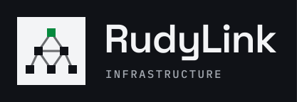
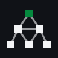

Charte graphique
RLI-COM-001 · v1.0 · 12/11/2026
RLI-COM-001 · v1.0 · 12/11/2026

Identité visuelle et règles de communication de RudyLink Infrastructure, société de conseil réseau du projet.
Société de conseil et d'ingénierie des réseaux. Pour le projet, elle joue la maîtrise d'œuvre du réseau du bâtiment R&T de Luminy et de son site jumeau.
RudyLink existe vraiment. C'est la micro-entreprise de Mattéo Canada, immatriculée le 20 octobre 2026 (activité 62.01Z, programmation informatique). Elle publie déjà deux services sous rudylink.eu : RudyLink Nutrition (01) et RudyLink Knowledge (02), une base de fiches de cours réseaux et cybersécurité.
Pour le projet, nous imaginons sa troisième branche : RudyLink Infrastructure (03), le pôle de conseil réseau. Le nom se prête au métier, puisque link désigne un lien réseau. L'identité s'appuie sur une charte qui existe déjà et que tout le groupe peut consulter en ligne, et le nom de domaine nous appartient.
« Nous concevons des réseaux d'établissement qui tiennent quinze ans : documentés, sécurisés selon les guides de l'ANSSI et chiffrés au plus juste. »
Chaque choix est chiffré et vérifiable : distances de câble, puissances, autonomie, coût sur 5 ans.
Le client doit pouvoir rédiger ses futurs cahiers des charges et CCTP à partir de nos livrables.
Double barrière de pare-feu, 802.1X, administration par bastion, en suivant les guides de l'ANSSI.
Dimensionner sans excès, mesurer la consommation (PUE) et proposer les économies chiffrées.

Le symbole dessine la hiérarchie que nous défendons dans le projet : un cœur (en émeraude), deux équipements de distribution reliés entre eux, trois commutateurs d'accès. L'accès central est raccordé aux deux distributions : c'est la redondance.
Il se construit sur une grille de 96 unités : nœuds carrés de 12, liens de 3, marges de 12. Angles droits partout, aucun arrondi, aucune ombre.
Le mot-symbole reprend la marque mère en Space Grotesk 600 ; la branche est écrite en IBM Plex Mono capitales, comme les étiquettes de la charte.
Couleur · fond clair · usage par défaut
Inverse · fond encre · couvertures, slides
Constellation · rappel du portail rudylink.eu
Monochrome · impression noir et blanc, tampon
Une version verticale (logo/rudylink-infrastructure-vertical-*.svg) sert aux formats carrés : avatar, page de garde centrée, affiche. Le symbole seul sert d'icône (favicon, réseaux sociaux, puce de diapositive).
Les couleurs viennent de la charte « Console » de RudyLink, définies en OKLCH puis converties pour l'impression et la bureautique. Règle de dosage : neutres sur l'essentiel de la page, encre pour le texte et les titres, émeraude en touche (un lien, un chiffre clé, le cœur du symbole). L'émeraude n'est jamais une couleur de fond étendue.
| Nom | HEX | RVB | Contraste / blanc | Usage | |
|---|---|---|---|---|---|
| Encre | #101217 | 16 18 23 | 18.7:1 | Texte principal, fond du symbole, couvertures | |
| Papier | #F3F4F6 | 243 244 246 | 1.1:1 | Fond des pages web, nœuds du symbole | |
| Surface | #FBFBFC | 251 251 252 | 1.0:1 | Encadrés, cartes, tableaux | |
| Trait | #CFD2D8 | 207 210 216 | 1.5:1 | Filets de 1 px, bordures | |
| Corps | #2B2F36 | 43 47 54 | 13.4:1 | Texte courant | |
| Discret | #6D727B | 109 114 123 | 4.8:1 | Légendes, étiquettes, pieds de page | |
| Émeraude | #05893E | 5 137 62 | 4.5:1 | Accent unique : cœur du symbole, liens, chiffre clé | |
| Émeraude foncé | #006925 | 0 105 37 | 6.9:1 | Accent sous forme de texte sur fond clair | |
| Émeraude nuit | #53BE70 | 83 190 112 | 2.3:1 | Accent sur fond sombre | |
| Vert Constellation | #052216 | 5 34 22 | 16.8:1 | Rappel du portail rudylink.eu (variante de logo) |
Contraste calculé selon WCAG 2.1. Le texte en émeraude utilise la variante foncée (6.9:1 sur blanc, niveau AAA) ; l'émeraude standard est réservé aux aplats, aux traits et au texte de grande taille.
Dans la roadmap, le rapport et les schémas, chaque axe garde sa teinte. Ces couleurs servent aux pastilles, aux légendes et aux traits de schéma, jamais au texte courant.
Toutes ces teintes dépassent 4,5:1 sur blanc.
Validé #05893E À valider #AB7400 Bloquant #C13C3B Information #0079B5
Grotesque géométrique, lisible en petit corps. Graisses 400 (texte), 500 (intertitres), 600 (titres).
Aa Bb Cc 0123456789 éèàçœ €
Chasse fixe pour tout ce qui se lit comme une donnée : noms d'équipements, adresses IP, VLAN, références, étiquettes.
EL-FGT1 · 10.13.20.0/24 · VLAN 120
| Niveau | Police | Document | Diapositive | Web | Règle |
|---|---|---|---|---|---|
| Titre de document | Space Grotesk 600 | 24 pt | 40 pt | 40–56 px | Interlettrage −2 % |
| Titre de partie | Space Grotesk 600 | 14,5 pt | 28 pt | 24 px | Filet de 1 px dessous |
| Intertitre | Space Grotesk 600 | 10,5 pt | 20 pt | 17 px | — |
| Texte courant | Space Grotesk 400 | 9,5 pt | 16–18 pt | 16 px | Interligne 1,5 ; 70 signes par ligne au plus |
| Étiquette | IBM Plex Mono 500 | 7 pt | 11 pt | 11 px | Capitales, interlettrage +6 % |
| Donnée technique | IBM Plex Mono 400 | 0,92 em | 0,92 em | 0,92 em | Dans le texte : DL-SW1 |
Aucun arrondi sur les encadrés, boutons, tableaux et images.
Les blocs se séparent par un trait fin, pas par une ombre.
Pas de dégradé, pas de flou, pas d'effet de verre.
Petites capitales espacées au-dessus des titres : POINT 04 · CÂBLAGE
Les extraits de configuration restent sur fond encre, quel que soit le thème.
Nœuds rectangulaires, liens droits, couleur d'axe sur la légende, émeraude pour le cœur.
Exemple de bloc de configuration (adresses données à titre d'illustration, le plan d'adressage est traité au point 05).
Nous écrivons comme un consultant qui doit être compris par un directeur de composante autant que par un administrateur réseau : clair, précis, sans jargon gratuit.
| Règle | Écrire | Éviter |
|---|---|---|
| Vouvoyer le client, parler au « nous » de l'équipe | Nous vous proposons deux onduleurs en voies A et B. | Il est proposé de mettre en place une solution d'onduleurs. |
| Chiffrer chaque affirmation | 24 min d'autonomie si un onduleur tombe en panne. | Une autonomie confortable. |
| Expliquer un sigle à sa première apparition | PUE (rapport entre l'énergie de la salle et celle des équipements) | Un PUE de 1,34. |
| Dire ce qui reste à valider | À valider avec le client : passages en vide sanitaire. | Passer sous silence une hypothèse. |
| Phrases courtes, voix active | La fibre monte par deux colonnes. | Il a été procédé à la mise en place de deux cheminements verticaux. |
CL-SW1), puis le modèle.| Support | Fichier modèle | Points clés |
|---|---|---|
| Rapport technique (30 p.) | modeles/modele_rapport.docx · .html | Couverture encre, cartouche de suivi, styles de titres, pied de page numéroté |
| Présentation orale | modeles/modele_presentation.pptx | Titre, intercalaire, contenu, chiffres clés, deux colonnes, conclusion |
| Compte rendu de réunion | modeles/modele_compte_rendu.docx | Participants, décisions, actions avec responsable et échéance |
| Site vitrine | livrables/site_web/ | Pages HTML simples aux couleurs et polices de la charte, journal de bord intégré |
| Courriel | modeles/signature_mail.html | Signature à coller dans le client de messagerie |
| Feuille de style | modeles/rudylink-document.css | Pour tout document HTML imprimé en PDF (comme les livrables des points 04 et 14) |